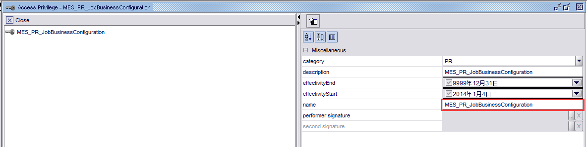

附件：：
系统菜单配置
- 创建Access Privileges
(1)Name的值与Form的Name要一致；

(2)Performers值为PlantOpsAdmin,PlantOpsDesigner

(3)mes(UDAs)值设为1；

备注：直接使用已配置Access Privileges，点击另存为，修改category，description的值
- 配置List(MenuItems)

格式(菜单级别+”空格”+MenuItems)
菜单级别：0（第一级），1（第一级），2（第一级）
实列如下：

- 配置List(MES_MenuItems)

格式(菜单级别+”空格”+MenuItems+”空格”+FromName)
备注：数据结构及数据需要与MenuItems一样

- 配置Message(MES_MAINFORM_MSG_UI)
对应的MenuItems需在MES_MAINFORM_MSG_UI配置国际化信息；

配置完成后启动：MES_ApplicationStart_JMC 检查配置的页面是否挂到制定的位置：
并运行无报错则代表测试OK